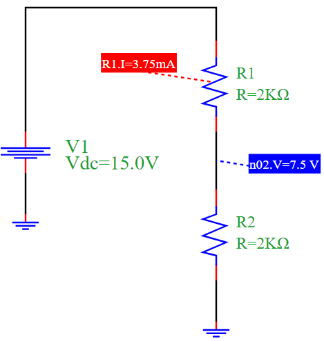

Voltage Divider Simulation
Overview
This example demonstrates a basic voltage divider circuit using PyAMS, which is commonly used to scale down voltages. The circuit consists of:
A DC voltage source V1
Two resistors R1 and R2 in series
The output voltage is measured across R2
The circuit divides the voltage proportionally based on the resistor values.
Circuit Diagram
Explanation
According to the voltage divider rule, the voltage across R2 is given by:
\[V_{out} = V_{in} \cdot \frac{R2}{R1 + R2}\]
Given: - \(V_{in} = 15V\) - \(R1 = R2 = 2k\Omega\)
Then:
\[V_{out} = 15 \cdot \frac{2000}{2000 + 2000} = 7.5V\]
The current through the series resistors is:
\[I = \frac{V_{in}}{R1 + R2} = \frac{15}{4000} = 3.75mA\]
Python Simulation Code
from pyams.lib import model, signal, param
from pyams.lib import voltage, current
# Resistor model using Ohm's Law
class resistor(model):
def __init__(self, p, n):
self.V = signal('in', voltage, p, n)
self.I = signal('out', current, p, n)
self.R = param(1000.0, 'Ω', 'Resistance')
self.Pout = param(1000.0, 'Ω', 'Resistance')
def analog(self):
self.I += self.V / self.R
from pyams.lib import circuit
from models import DCVoltage
# Define elements
V1 = DCVoltage('n1', '0')
R1 = resistor('n1', 'n2')
R2 = resistor('n2', '0')
# Set component parameters
V1.setParams("Vdc=15V")
R1.setParams("R=2kΩ")
R2.setParams("R=2kΩ")
# Create and simulate circuit
myCircuit = circuit()
myCircuit.addElements({'V1': V1, 'R1': R1, 'R2': R2})
myCircuit.analysis(mode='op')
myCircuit.run()
# Output results
myCircuit.print('n2', R1.I)
Simulation Results
Output Voltage at node n2: 7.5 V
Output Current through R1: 3.75 mA